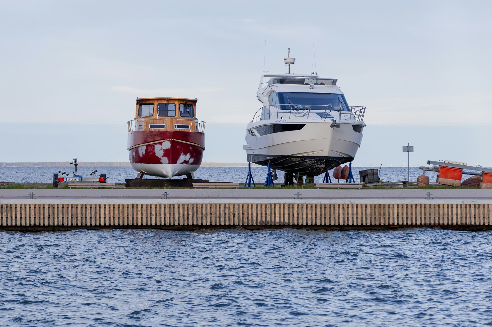
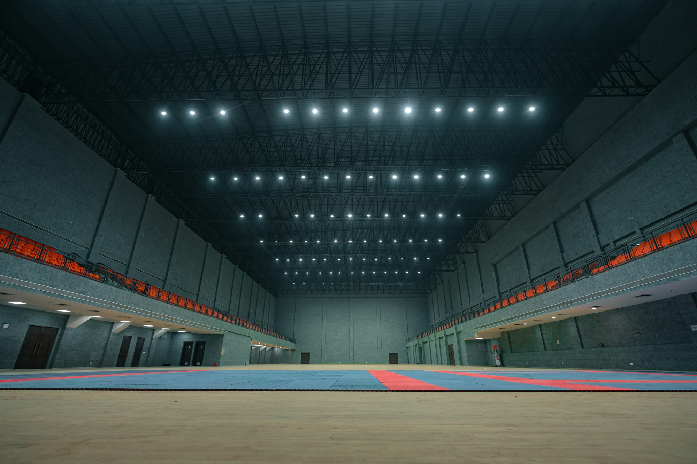
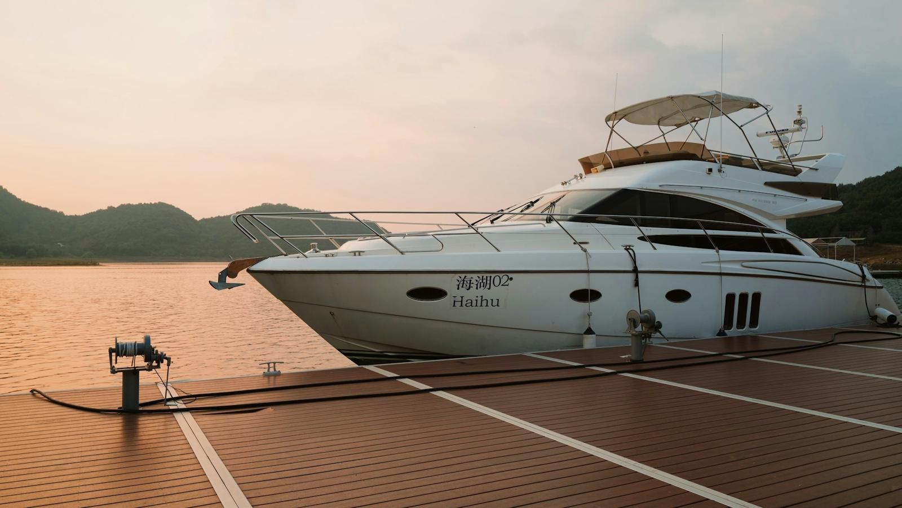
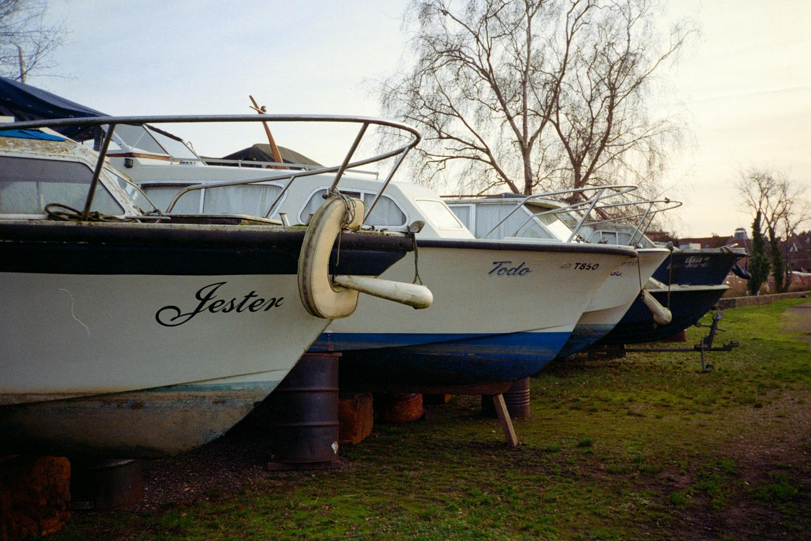
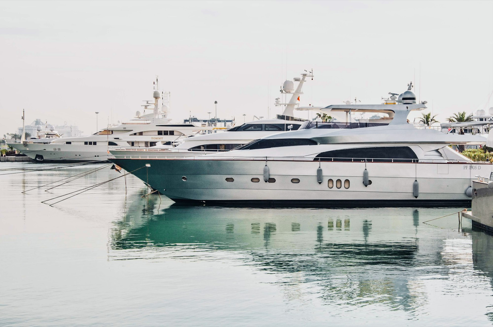
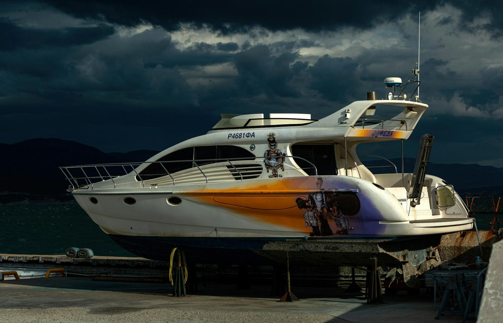

01
Kapalı Kışlama
Güneş, yağmur ve tuzdan uzak, iklim kontrollü kapalı garajda güvenli park.
Detay →
Kapalı kışlama, bakım, onarım ve temizlik tek çatı altında. Sezon bittiğinde teknenizi teslim alıyor, ilkbaharda pırıl pırıl suya indiriyoruz.
Yerinizi ayırtınBoat Garage, Reis Yachting'in yirmi yılı aşan deniz tecrübesini kapalı bir garaja taşıyor. Tuz, güneş ve nem tekneye en çok kışın zarar verir; biz o aylarda teknenizi kapalı alanda, kontrollü ortamda koruyoruz.
Basınçlı yıkama, karina temizliği, jelkot polisaj ve iç detay temizliği. Tekneniz garajdan çıkarken ilk günkü gibi parlıyor.
Kışlama sadece park etmek değildir. Tekneniz garajdayken bakım takvimi işler, ilkbaharda ek servis gerekmez.
Güneş, yağmur ve tuzdan uzak, iklim kontrollü kapalı garajda güvenli park.
Motor, şanzıman, elektrik ve fiber onarımı; yetkili servis standartlarında.
Jelkot polisaj, teak bakımı, iç mekân detay temizliği ve koruma uygulaması.
Karina raspası, zehirli boya ve anot değişimi; sezona hazır alt yapı.
Marinadan garaja, garajdan denize: kaldırma, taşıma ve suya indirme bizde.
Su altı kontrolleri, sistem testleri ve teslim öncesi son kontrol listesi.
Siz aramanızı yapın, gerisini biz halledelim. Her adımda WhatsApp'tan fotoğraflı bilgilendirme alırsınız.

Marinanızdan veya Çeşme'deki iskelemizden tekneniz alınır.

Travel lift ile güvenle kaldırılır, karina yıkanır.

Motor kışlama işlemi, sistem kontrolleri ve onarımlar.

Kapalı, kameralı, nem kontrollü alanda kışı geçirir.

Polisajı yapılmış, denize hazır tekneniz iskelede sizi bekler.
Her tekne kendi yerinde, kendi bakım kartıyla. İstediğiniz an fotoğrafını isteyin, gönderelim.






Tekne boyunuzu ve marinanızı yazın, aynı gün fiyat ve teslim tarihi dönelim.
WhatsApp'tan yazın